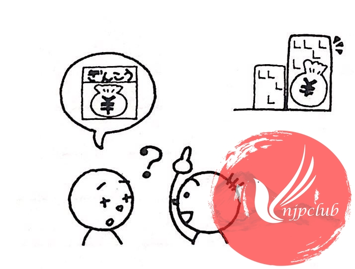
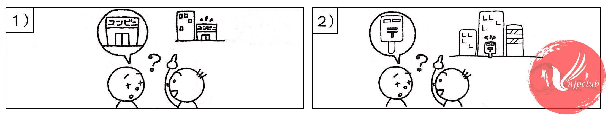

|
A: |
あのう、近くに銀行が ありますか。 Xin lỗi, gần đây có ngân hàng không vậy? |
|
B: |
ええ。 あそこに 高い ビルが ありますね。 Có đấy. Ở kia có tòa nhà cao tầng đấy. |
|
|
|
|
A: |
わかりました。 ありがとう ございました。 Tôi biết rồi. Xin cảm ơn nhiều. |
Luyện tập:
[thay thế vị trí gạch chân bằng nội dung trong hình]
